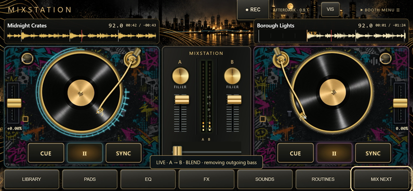
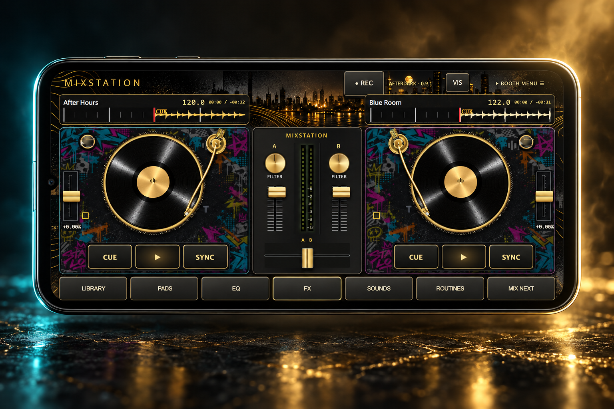
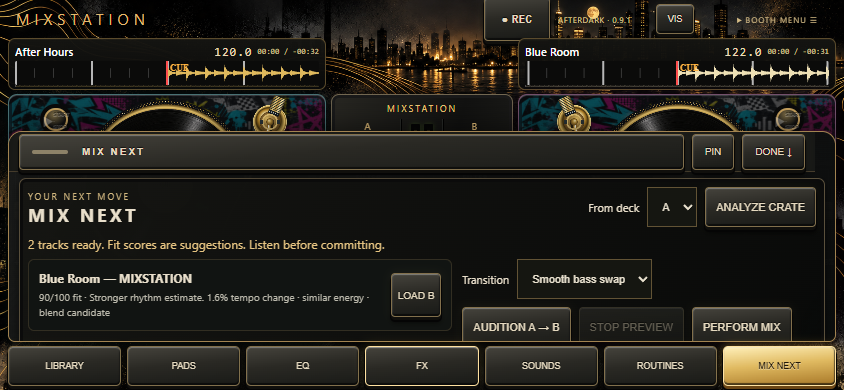

A little vinyl attitude.
A lot of room to play.
Drag the record to scratch. Ride the crossfader. Use cues and EQ to give a transition your own signature.

YOUR ANDROID. YOUR BOOTH.
That track you love? Make it part of your next mix. Scratch, blend and experiment with a DJ booth that goes where you do.
Android edition · In development

01 / GET YOUR HANDS ON IT
Keep your collection close and your controls closer. The decks stay at the heart of the experience.
Drag the record to scratch. Ride the crossfader. Use cues and EQ to give a transition your own signature.

Add beat-timed echo, reverb, flanger and phaser. Switch effects in and out while the music plays.
Record your mix as audio or a portrait clip with reactive visuals. Save it, listen back and build on your next session.
02 / FIND YOUR NEXT MOVE
Not sure what goes together? Mix Next compares estimated tempo and energy, explains the pairing and lets you audition a transition.
Listen first. Adjust. Then make it yours. Suggestions guide your choices; they don’t replace your ears.

03 / NO GUESSING. WATCH IT WORK.
Turn up the sound. Follow the controls. Hear the difference.
Real app interface captured in a desktop browser at a mobile landscape size. Original practice audio; chapter labels added. Android system folder and save dialogs are not shown.
04 / MAKE IT YOUR SESSION
Select a local music folder and its subfolders, then load a track on each deck.
Find a pairing, rehearse a blend, throw in a scratch and shape it with effects.
Record the session and save through Android’s file picker. Come back with fresh ears.
BEFORE YOU STEP IN
The current build requires Android 9 or later and is designed for landscape use. Physical-device acceptance testing is ongoing; a final supported-device list is not available yet. Keep the app in the foreground while mixing. Video recording requires more processing power.
Afterdark works with local audio files you supply. Commercial music is not included. Spotify and YouTube streaming, stem separation and key lock are not included in this edition. Only share recordings you have permission to distribute.
If a save dialog is cancelled, use Recover last recording in Library. Export recordings before uninstalling or changing devices. Private app data, cues and folder permissions do not automatically transfer.
AFTERDARK / ANDROID
We’re preparing the commercial release. Device testing and purchase-flow verification are still in progress. Pricing and availability will be announced after those checks are complete.
Get to know Afterdark ▶No checkout or paid download is available on this page.